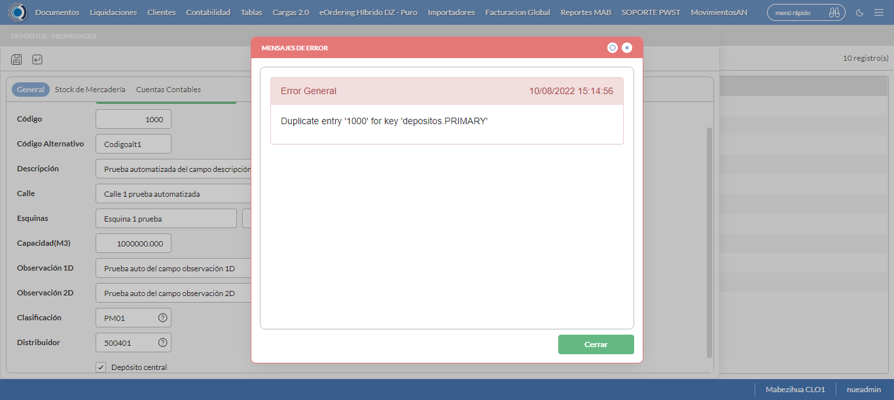

Desarrollado por : Area de Testing PWST
Fecha y hora de inicio : 2022-08-10 13:09:04
Duracion : 0:08:15.303573
Resultado : Total 8，Correctos 5 ，Errores 3 ，Taza de resultado 62.50%
Resumen 62.50% Errores 3 Fallidos 0 Correctos 5 Test realizados 8
| Caso de Prueba | Total | Correctos | Fallido | Error | Detalles | Captura del error |
| Depositos.Test: Escenario 1 de Depositos | 8 | 5 | 0 | 3 | Detalles | |
test |
pt1_1: 2022-08-10 13:09:06,517 - root - INFO - Se abre el chrome
2022-08-10 13:09:09,695 - root - INFO - Entra a la URL
2022-08-10 13:09:09,828 - root - INFO - Maximiza la pantalla
2022-08-10 13:09:12,882 - root - INFO - Cambia al frame
|
|
||||
test_000: Ingresa a la base de datos |
pt1_2: 2022-08-10 13:09:15,971 - root - INFO - Escribe el usuario
2022-08-10 13:09:16,083 - root - INFO - Escribe la contraseña
2022-08-10 13:09:16,222 - root - INFO - Se dio clic en el boton ingresar
2022-08-10 13:09:19,377 - root - INFO - Ejecutar Enterprise
2022-08-10 13:09:19,378 - root - INFO - Captura: C:\xampp\htdocs\versiones\automatizaciones\AutoPWST\01DEP\report\img screen：20220810_13_09_19.png
2022-08-10 13:09:23,613 - root - INFO - Cambia entre pestañas
|

|
||||
test_001: Abre menu y ejecuta pantalla |
pt1_3: 2022-08-10 13:09:48,604 - root - INFO - Abre el menu completo
2022-08-10 13:10:01,570 - root - INFO - Abre la pantalla de Depositos
2022-08-10 13:10:01,659 - root - INFO - La pantalla ejecutada es Depositos
2022-08-10 13:10:04,663 - root - INFO - Captura: C:\xampp\htdocs\versiones\automatizaciones\AutoPWST\01DEP\report\img screen：20220810_13_10_04.png
2022-08-10 13:10:04,881 - root - INFO - Se presiona el boton 'Nuevo', para crear un nuevo registro.
|

|
||||
test_002: Abre la ventana de nuevo y crear un registro |
pt1_4: 2022-08-10 13:10:09,954 - root - INFO - Se abrio la pantalla para el ingreso de un registro nuevo.
2022-08-10 13:10:09,996 - root - INFO - El campo 'Codigo' si se encuentra visible.
2022-08-10 13:10:10,040 - root - INFO - El campo 'Codigo Usuario' si se encuentra visible.
2022-08-10 13:10:10,080 - root - INFO - El campo 'Codigo Alternativo' si se encuentra visible.
2022-08-10 13:10:10,121 - root - INFO - El campo 'Codigo GLN' si se encuentra visible.
2022-08-10 13:10:10,162 - root - INFO - El campo 'Descrición' si se encuentra visible.
2022-08-10 13:10:10,201 - root - INFO - El campo 'Calle' si se encuentra visible.
2022-08-10 13:10:10,246 - root - INFO - El campo 'Nro. Puerta' si se encuentra visible.
2022-08-10 13:10:10,288 - root - INFO - El campo 'Esquinas' si se encuentra visible.
2022-08-10 13:10:10,337 - root - INFO - El campo 'Capacidad(M3)' si se encuentra visible.
2022-08-10 13:10:10,389 - root - INFO - El campo 'Observación 1D' si se encuentra visible.
2022-08-10 13:10:10,432 - root - INFO - El campo 'Observación 2D' si se encuentra visible.
2022-08-10 13:10:10,471 - root - INFO - El campo 'Clasificación' si se encuentra visible.
2022-08-10 13:10:10,525 - root - INFO - El campo 'Distribuidor' si se encuentra visible.
2022-08-10 13:10:10,581 - root - INFO - El campo 'Depósito Principal' si se encuentra visible.
2022-08-10 13:10:10,622 - root - INFO - El campo 'Agencia' si se encuentra visible.
2022-08-10 13:10:10,660 - root - INFO - El campo 'Oficina' si se encuentra visible.
2022-08-10 13:10:10,700 - root - INFO - El campo 'Depósito central' si se encuentra visible.
2022-08-10 13:10:10,785 - root - INFO - Ingresa el codigo del nuevo registro
2022-08-10 13:10:13,989 - root - INFO - Ingresa el codigo usuario del nuevo registro
2022-08-10 13:10:17,177 - root - INFO - Ingresa el codigo alternativo del nuevo registro
2022-08-10 13:10:20,380 - root - INFO - Ingresa el codigo GLN del nuevo registro
2022-08-10 13:10:23,549 - root - INFO - Ingresa la descripción del nuevo registro
2022-08-10 13:10:26,788 - root - INFO - Ingresa la calle del nuevo registro
2022-08-10 13:10:29,946 - root - INFO - Ingresa el Num de la puerta del nuevo registro
2022-08-10 13:10:33,134 - root - INFO - Ingresa la esquina 1 del nuevo registro
2022-08-10 13:10:36,304 - root - INFO - Ingresa la esquina 2 del nuevo registro
2022-08-10 13:10:39,453 - root - INFO - Ingresa la Capacidad M3 del nuevo registro
2022-08-10 13:10:42,624 - root - INFO - Ingresa la observacion 1D del nuevo registro
2022-08-10 13:10:45,852 - root - INFO - Ingresa la Observacion 2D del nuevo registro
2022-08-10 13:11:44,584 - root - INFO - Captura: C:\xampp\htdocs\versiones\automatizaciones\AutoPWST\01DEP\report\img screen：20220810_13_11_44.png
2022-08-10 13:11:44,844 - root - INFO - Se hace el cambio de pestaña para continuar con el registro nuevo
2022-08-10 13:11:48,050 - root - INFO - Se presiona el boton 'Nuevo', para crear un nuevo registro.
2022-08-10 13:11:53,184 - root - INFO - El campo 'Artículo' si se encuentra visible.
2022-08-10 13:11:53,260 - root - INFO - El campo 'Stock Mínimo' si se encuentra visible.
2022-08-10 13:11:53,312 - root - INFO - El campo 'Stock Deseado' si se encuentra visible.
2022-08-10 13:12:08,940 - root - INFO - Ingresa el Stock Minimo del nuevo registro
2022-08-10 13:12:12,139 - root - INFO - Ingresa el Stock Deseado del nuevo registro
2022-08-10 13:12:15,273 - root - INFO - Se presiona el boton 'Guardar', para guardar el registro.
2022-08-10 13:12:20,406 - root - INFO - Se hace el cambio de pestaña para continuar con el registro nuevo
2022-08-10 13:12:23,539 - root - INFO - Se presiona el boton 'Nuevo', para crear un nuevo registro.
2022-08-10 13:12:28,641 - root - INFO - El campo 'Tipo Documento' si se encuentra visible.
2022-08-10 13:12:28,707 - root - INFO - El campo 'Cuenta Contable' si se encuentra visible.
2022-08-10 13:12:28,768 - root - INFO - El campo 'Centro Costo' si se encuentra visible.
2022-08-10 13:13:00,386 - root - INFO - Se presiona el boton 'Aceptar', para guardar el registro.
2022-08-10 13:13:05,576 - root - INFO - Se da clic en el boton Guardar; se debe crear un nuevo registro.
|

|
||||
test_003: Repetir el registro creado anteriormente |
pt1_5: 2022-08-10 13:13:10,744 - root - INFO - Se presiona el boton 'Refrescar', para crear un nuevo registro igual al anterior.
2022-08-10 13:13:15,878 - root - INFO - Se presiona el boton 'Nuevo', para crear un nuevo registro igual al anterior.
2022-08-10 13:13:20,989 - root - INFO - Se abrio la pantalla para el ingreso de un registro nuevo.
2022-08-10 13:13:21,034 - root - INFO - El campo 'Codigo' si se encuentra visible.
2022-08-10 13:13:21,077 - root - INFO - El campo 'Codigo Usuario' si se encuentra visible.
2022-08-10 13:13:21,117 - root - INFO - El campo 'Codigo Alternativo' si se encuentra visible.
2022-08-10 13:13:21,158 - root - INFO - El campo 'Codigo GLN' si se encuentra visible.
2022-08-10 13:13:21,197 - root - INFO - El campo 'Descrición' si se encuentra visible.
2022-08-10 13:13:21,242 - root - INFO - El campo 'Calle' si se encuentra visible.
2022-08-10 13:13:21,290 - root - INFO - El campo 'Nro. Puerta' si se encuentra visible.
2022-08-10 13:13:21,331 - root - INFO - El campo 'Esquinas' si se encuentra visible.
2022-08-10 13:13:21,370 - root - INFO - El campo 'Capacidad(M3)' si se encuentra visible.
2022-08-10 13:13:21,410 - root - INFO - El campo 'Observación 1D' si se encuentra visible.
2022-08-10 13:13:21,450 - root - INFO - El campo 'Observación 2D' si se encuentra visible.
2022-08-10 13:13:21,488 - root - INFO - El campo 'Clasificación' si se encuentra visible.
2022-08-10 13:13:21,529 - root - INFO - El campo 'Distribuidor' si se encuentra visible.
2022-08-10 13:13:21,568 - root - INFO - El campo 'Depósito Principal' si se encuentra visible.
2022-08-10 13:13:21,608 - root - INFO - El campo 'Agencia' si se encuentra visible.
2022-08-10 13:13:21,650 - root - INFO - El campo 'Oficina' si se encuentra visible.
2022-08-10 13:13:21,690 - root - INFO - El campo 'Depósito central' si se encuentra visible.
2022-08-10 13:13:21,779 - root - INFO - Ingresa el codigo del nuevo registro
2022-08-10 13:13:24,939 - root - INFO - Ingresa el codigo usuario del nuevo registro
2022-08-10 13:13:28,102 - root - INFO - Ingresa el codigo alternativo del nuevo registro
2022-08-10 13:13:31,278 - root - INFO - Ingresa el codigo GLN del nuevo registro
2022-08-10 13:13:34,496 - root - INFO - Ingresa la descripción del nuevo registro
2022-08-10 13:13:37,673 - root - INFO - Ingresa la calle del nuevo registro
2022-08-10 13:13:40,855 - root - INFO - Ingresa el Num de la puerta del nuevo registro
2022-08-10 13:13:44,084 - root - INFO - Ingresa la esquina 1 del nuevo registro
2022-08-10 13:13:47,289 - root - INFO - Ingresa la esquina 2 del nuevo registro
2022-08-10 13:13:50,490 - root - INFO - Ingresa la Capacidad M3 del nuevo registro
2022-08-10 13:13:53,662 - root - INFO - Ingresa la observacion 1D del nuevo registro
2022-08-10 13:13:56,873 - root - INFO - Ingresa la Observacion 2D del nuevo registro
2022-08-10 13:14:55,932 - root - INFO - Se da clic en el boton Guardar; se debe crear un nuevo registro.
2022-08-10 13:15:00,943 - root - INFO - Captura: C:\xampp\htdocs\versiones\automatizaciones\AutoPWST\01DEP\report\img screen：20220810_13_15_00.png
2022-08-10 13:15:01,198 - root - INFO - Se presiona el boton 'Cerrar', para cerrar el mensaje de duplicidad de llave primaria
2022-08-10 13:15:04,316 - root - INFO - Se presiona el boton 'Cerrar', para cerrar la ventana
|
 | ||||
test_004: Modificar el registro |
ft1_6: 2022-08-10 13:15:08,471 - root - INFO - Se presiona el boton 'Refrescar', para crear un nuevo registro igual al anterior.
2022-08-10 13:15:18,127 - root - INFO - Se da clic en el registro creado, para proceder a modificarlo.
2022-08-10 13:15:21,336 - root - INFO - Ingresa el codigo usuario del nuevo registro
2022-08-10 13:15:24,519 - root - INFO - Ingresa el codigo alternativo del nuevo registro
2022-08-10 13:15:27,746 - root - INFO - Ingresa el codigo GLN del nuevo registro
2022-08-10 13:15:31,040 - root - INFO - Ingresa la descripción del nuevo registro
2022-08-10 13:15:34,280 - root - INFO - Ingresa la calle del nuevo registro
2022-08-10 13:15:37,522 - root - INFO - Ingresa el Num de la puerta del nuevo registro
2022-08-10 13:15:40,737 - root - INFO - Ingresa la esquina 1 del nuevo registro
2022-08-10 13:15:44,005 - root - INFO - Ingresa la esquina 2 del nuevo registro
2022-08-10 13:15:47,181 - root - INFO - Ingresa la Capacidad M3 del nuevo registro
2022-08-10 13:15:50,469 - root - INFO - Ingresa la observacion 1D del nuevo registro
2022-08-10 13:15:53,718 - root - INFO - Ingresa la Observacion 2D del nuevo registro
2022-08-10 13:16:52,509 - root - INFO - Captura: C:\xampp\htdocs\versiones\automatizaciones\AutoPWST\01DEP\report\img screen：20220810_13_16_52.png
2022-08-10 13:16:52,756 - root - INFO - Se hace el cambio de pestaña para continuar con el registro nuevo
2022-08-10 13:17:00,421 - root - INFO - Se da clic en el registro creado, para proceder a modificarlo.
2022-08-10 13:17:13,621 - root - ERROR - No se encontró el registro de articulo, revise si el xpath sigue siendo el mismo, para mas detalles del error consulte el reporte
2022-08-10 13:17:16,624 - root - INFO - Captura: C:\xampp\htdocs\versiones\automatizaciones\AutoPWST\01DEP\report\img screen：20220810_13_17_16.png
Traceback (most recent call last):
File "C:\xampp\htdocs\versiones\automatizaciones\AutoPWST\01DEP\testCase\Depositos.py", line 52, in test_004
return modificarregistro.modificarregistro(self)
File "C:\xampp\htdocs\versiones\automatizaciones\AutoPWST\01DEP\testCase\modificarregistro.py", line 488, in modificarregistro
registro_articulo = self.driver.find_element(By.XPATH, "//div[text()='40041615']")
File "C:\Users\PWST\Desktop\Automatización\AutoPWST-2.0\AutoPWST-2.0\venv\lib\site-packages\selenium\webdriver\remote\webdriver.py", line 857, in find_element
return self.execute(Command.FIND_ELEMENT, {
File "C:\Users\PWST\Desktop\Automatización\AutoPWST-2.0\AutoPWST-2.0\venv\lib\site-packages\selenium\webdriver\remote\webdriver.py", line 435, in execute
self.error_handler.check_response(response)
File "C:\Users\PWST\Desktop\Automatización\AutoPWST-2.0\AutoPWST-2.0\venv\lib\site-packages\selenium\webdriver\remote\errorhandler.py", line 247, in check_response
raise exception_class(message, screen, stacktrace)
selenium.common.exceptions.NoSuchElementException: Message: no such element: Unable to locate element: {"method":"xpath","selector":"//div[text()='40041615']"}
(Session info: chrome=104.0.5112.81)
Stacktrace:
Backtrace:
Ordinal0 [0x00826463+2188387]
Ordinal0 [0x007BE461+1762401]
Ordinal0 [0x006D3D78+802168]
Ordinal0 [0x00701880+989312]
Ordinal0 [0x00701B1B+989979]
Ordinal0 [0x0072E912+1173778]
Ordinal0 [0x0071C824+1099812]
Ordinal0 [0x0072CC22+1166370]
Ordinal0 [0x0071C5F6+1099254]
Ordinal0 [0x006F6BE0+945120]
Ordinal0 [0x006F7AD6+948950]
GetHandleVerifier [0x00AC71F2+2712546]
GetHandleVerifier [0x00AB886D+2652765]
GetHandleVerifier [0x008B002A+520730]
GetHandleVerifier [0x008AEE06+516086]
Ordinal0 [0x007C468B+1787531]
Ordinal0 [0x007C8E88+1805960]
Ordinal0 [0x007C8F75+1806197]
Ordinal0 [0x007D1DF1+1842673]
BaseThreadInitThunk [0x7781FA29+25]
RtlGetAppContainerNamedObjectPath [0x77D97A7E+286]
RtlGetAppContainerNamedObjectPath [0x77D97A4E+238]
|

|
||||
test_005: Eliminar el registro creado |
ft1_7: 2022-08-10 13:17:17,191 - root - ERROR - No se encontró el botón Refrescar, revise si el xpath sigue siendo el mismo, para mas detalles del error consulte el reporte
2022-08-10 13:17:20,195 - root - INFO - Captura: C:\xampp\htdocs\versiones\automatizaciones\AutoPWST\01DEP\report\img screen：20220810_13_17_20.png
Traceback (most recent call last):
File "C:\xampp\htdocs\versiones\automatizaciones\AutoPWST\01DEP\testCase\eliminarregistro.py", line 21, in eliminarregistro
Refresca3 = self.wait.until(conditions.visibility((By.XPATH, Configuracion.btn_Refresca)))
File "C:\Users\PWST\Desktop\Automatización\AutoPWST-2.0\AutoPWST-2.0\venv\lib\site-packages\selenium\webdriver\support\wait.py", line 81, in until
value = method(self._driver)
File "C:\Users\PWST\Desktop\Automatización\AutoPWST-2.0\AutoPWST-2.0\venv\lib\site-packages\selenium\webdriver\support\expected_conditions.py", line 125, in _predicate
return _element_if_visible(driver.find_element(*locator))
File "C:\Users\PWST\Desktop\Automatización\AutoPWST-2.0\AutoPWST-2.0\venv\lib\site-packages\selenium\webdriver\remote\webdriver.py", line 857, in find_element
return self.execute(Command.FIND_ELEMENT, {
File "C:\Users\PWST\Desktop\Automatización\AutoPWST-2.0\AutoPWST-2.0\venv\lib\site-packages\selenium\webdriver\remote\webdriver.py", line 435, in execute
self.error_handler.check_response(response)
File "C:\Users\PWST\Desktop\Automatización\AutoPWST-2.0\AutoPWST-2.0\venv\lib\site-packages\selenium\webdriver\remote\errorhandler.py", line 247, in check_response
raise exception_class(message, screen, stacktrace)
selenium.common.exceptions.InvalidSessionIdException: Message: invalid session id
Stacktrace:
Backtrace:
Ordinal0 [0x00826463+2188387]
Ordinal0 [0x007BE461+1762401]
Ordinal0 [0x006D3C40+801856]
Ordinal0 [0x006F68BD+944317]
Ordinal0 [0x006F7AD6+948950]
GetHandleVerifier [0x00AC71F2+2712546]
GetHandleVerifier [0x00AB886D+2652765]
GetHandleVerifier [0x008B002A+520730]
GetHandleVerifier [0x008AEE06+516086]
Ordinal0 [0x007C468B+1787531]
Ordinal0 [0x007C8E88+1805960]
Ordinal0 [0x007C8F75+1806197]
Ordinal0 [0x007D1DF1+1842673]
BaseThreadInitThunk [0x7781FA29+25]
RtlGetAppContainerNamedObjectPath [0x77D97A7E+286]
RtlGetAppContainerNamedObjectPath [0x77D97A4E+238]
During handling of the above exception, another exception occurred:
Traceback (most recent call last):
File "C:\xampp\htdocs\versiones\automatizaciones\AutoPWST\01DEP\testCase\Depositos.py", line 56, in test_005
return eliminarregistro.eliminarregistro(self)
File "C:\xampp\htdocs\versiones\automatizaciones\AutoPWST\01DEP\testCase\eliminarregistro.py", line 32, in eliminarregistro
self.driver.get_screenshot_as_file(img_name)
File "C:\Users\PWST\Desktop\Automatización\AutoPWST-2.0\AutoPWST-2.0\venv\lib\site-packages\selenium\webdriver\remote\webdriver.py", line 928, in get_screenshot_as_file
png = self.get_screenshot_as_png()
File "C:\Users\PWST\Desktop\Automatización\AutoPWST-2.0\AutoPWST-2.0\venv\lib\site-packages\selenium\webdriver\remote\webdriver.py", line 964, in get_screenshot_as_png
return b64decode(self.get_screenshot_as_base64().encode('ascii'))
File "C:\Users\PWST\Desktop\Automatización\AutoPWST-2.0\AutoPWST-2.0\venv\lib\site-packages\selenium\webdriver\remote\webdriver.py", line 976, in get_screenshot_as_base64
return self.execute(Command.SCREENSHOT)['value']
File "C:\Users\PWST\Desktop\Automatización\AutoPWST-2.0\AutoPWST-2.0\venv\lib\site-packages\selenium\webdriver\remote\webdriver.py", line 435, in execute
self.error_handler.check_response(response)
File "C:\Users\PWST\Desktop\Automatización\AutoPWST-2.0\AutoPWST-2.0\venv\lib\site-packages\selenium\webdriver\remote\errorhandler.py", line 247, in check_response
raise exception_class(message, screen, stacktrace)
selenium.common.exceptions.InvalidSessionIdException: Message: invalid session id
Stacktrace:
Backtrace:
Ordinal0 [0x00826463+2188387]
Ordinal0 [0x007BE461+1762401]
Ordinal0 [0x006D3C40+801856]
Ordinal0 [0x006F6660+943712]
Ordinal0 [0x0071C6D0+1099472]
Ordinal0 [0x0071A523+1090851]
Ordinal0 [0x0071A0D8+1089752]
Ordinal0 [0x006B5447+676935]
Ordinal0 [0x006B59C3+678339]
Ordinal0 [0x006B5DFA+679418]
GetHandleVerifier [0x00AC71F2+2712546]
GetHandleVerifier [0x00AB886D+2652765]
GetHandleVerifier [0x008B002A+520730]
GetHandleVerifier [0x008AEE06+516086]
Ordinal0 [0x007C468B+1787531]
Ordinal0 [0x006B51D7+676311]
Ordinal0 [0x006B4C88+674952]
GetHandleVerifier [0x00AE95BC+2852780]
BaseThreadInitThunk [0x7781FA29+25]
RtlGetAppContainerNamedObjectPath [0x77D97A7E+286]
RtlGetAppContainerNamedObjectPath [0x77D97A4E+238]
|

|
||||
test_006: Cerrar_Navegador |
ft1_8: Traceback (most recent call last):
File "C:\xampp\htdocs\versiones\automatizaciones\AutoPWST\01DEP\testCase\Depositos.py", line 60, in test_006
self.driver.close()
File "C:\Users\PWST\Desktop\Automatización\AutoPWST-2.0\AutoPWST-2.0\venv\lib\site-packages\selenium\webdriver\remote\webdriver.py", line 552, in close
self.execute(Command.CLOSE)
File "C:\Users\PWST\Desktop\Automatización\AutoPWST-2.0\AutoPWST-2.0\venv\lib\site-packages\selenium\webdriver\remote\webdriver.py", line 435, in execute
self.error_handler.check_response(response)
File "C:\Users\PWST\Desktop\Automatización\AutoPWST-2.0\AutoPWST-2.0\venv\lib\site-packages\selenium\webdriver\remote\errorhandler.py", line 247, in check_response
raise exception_class(message, screen, stacktrace)
selenium.common.exceptions.InvalidSessionIdException: Message: invalid session id
Stacktrace:
Backtrace:
Ordinal0 [0x00826463+2188387]
Ordinal0 [0x007BE461+1762401]
Ordinal0 [0x006D3C40+801856]
Ordinal0 [0x006F6660+943712]
Ordinal0 [0x0071C6D0+1099472]
Ordinal0 [0x0071A523+1090851]
Ordinal0 [0x0071A0D8+1089752]
Ordinal0 [0x006B5447+676935]
Ordinal0 [0x006B59C3+678339]
Ordinal0 [0x006B5DFA+679418]
GetHandleVerifier [0x00AC71F2+2712546]
GetHandleVerifier [0x00AB886D+2652765]
GetHandleVerifier [0x008B002A+520730]
GetHandleVerifier [0x008AEE06+516086]
Ordinal0 [0x007C468B+1787531]
Ordinal0 [0x006B51D7+676311]
Ordinal0 [0x006B4C88+674952]
GetHandleVerifier [0x00AE95BC+2852780]
BaseThreadInitThunk [0x7781FA29+25]
RtlGetAppContainerNamedObjectPath [0x77D97A7E+286]
RtlGetAppContainerNamedObjectPath [0x77D97A4E+238]
|
|
||||
| Caso de prueba | 8 | 5 | 0 | 3 | Taza de resultado：62.50% | |